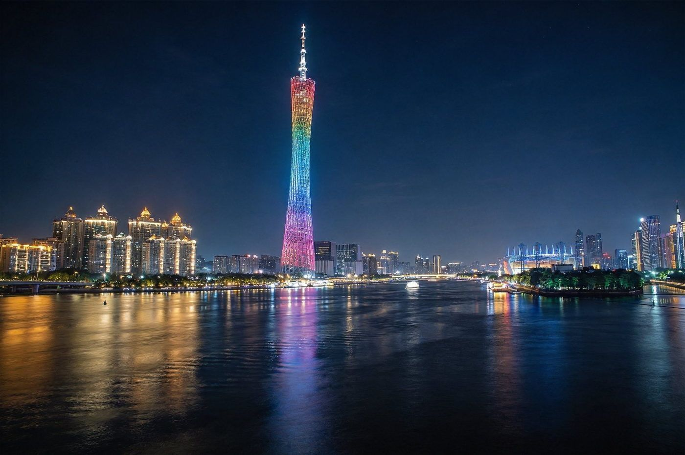
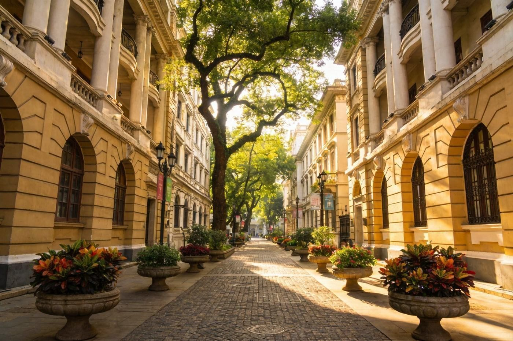
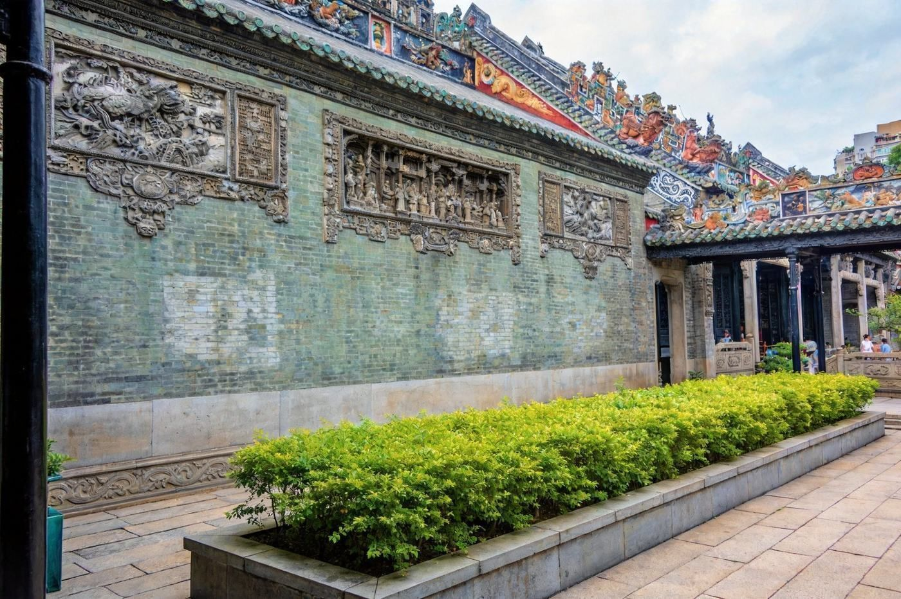
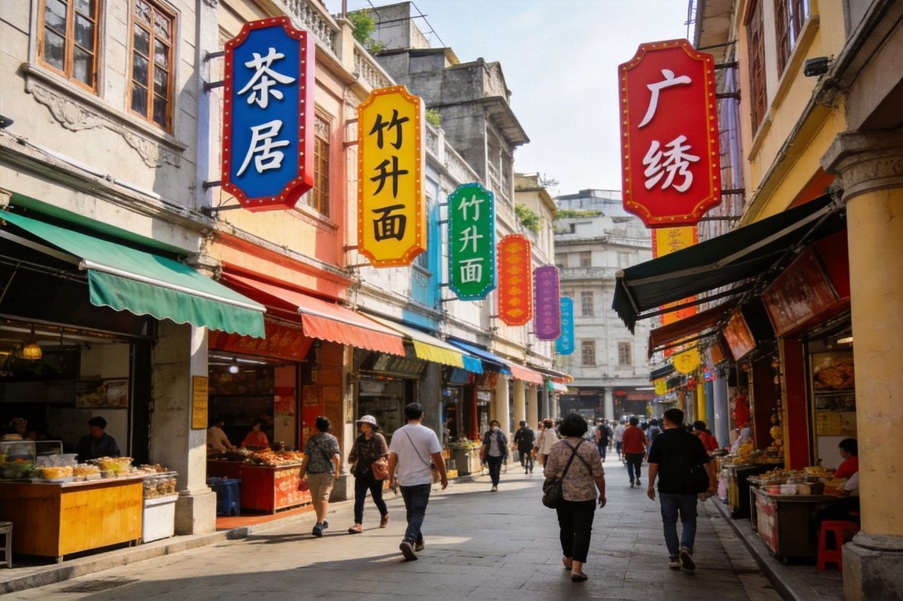
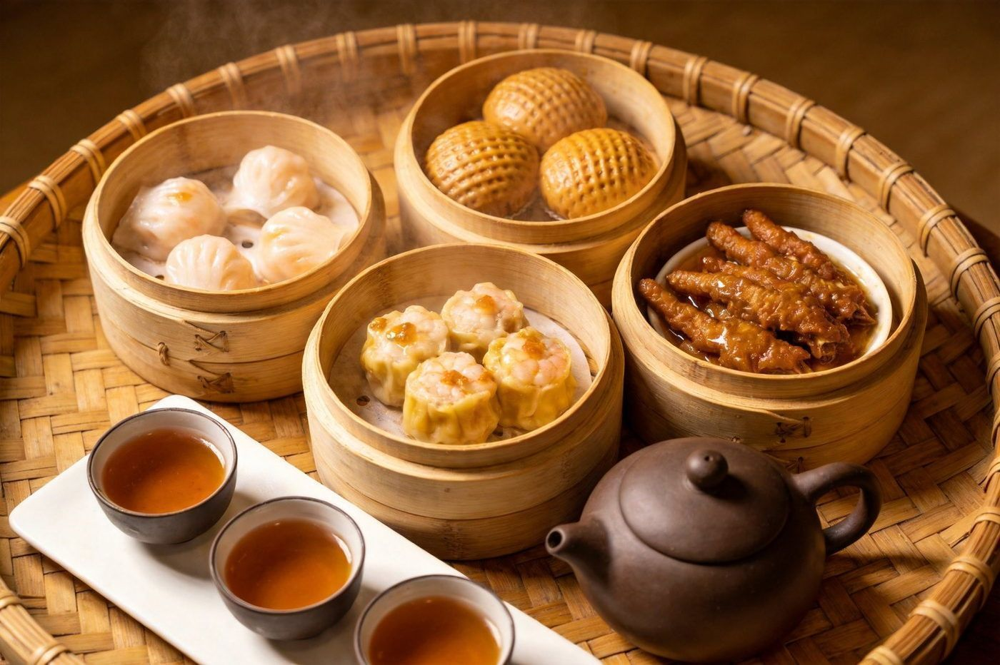
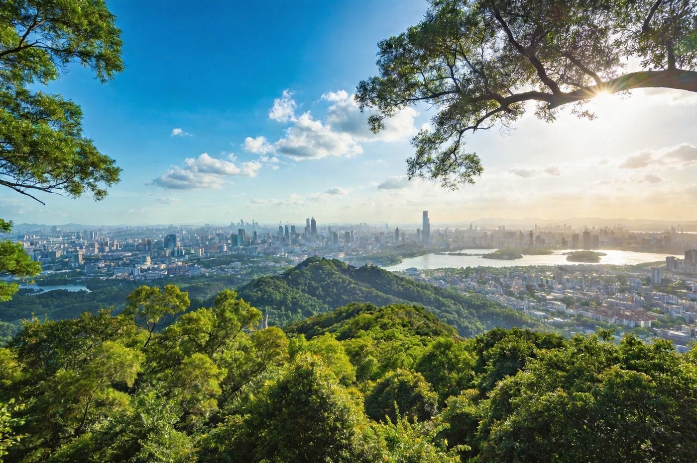

🏮 广州 · GUANGZHOU TRAVEL GUIDE
广州三模式组合指南
一座泡在早茶与骑楼里的城市：2 天精华 走西关文化和珠江夜景；3 天加长 加长隆乐园适合亲子年轻；4 天深度 把老城、山水、美食慢慢吃透。美味之都，1–3 人均适合。
📍 目的地：广州
👥 1–3 人 / 亲子
⏱️ 精华2天 · 加长3天 · 深度4天
💰 人均预算已附
🏮2 天 · 精华版（西关文化 + 珠江夜景）
广州的第一次见面：一天泡在西关老城与欧陆风情里，一天走上现代中轴看小蛮腰夜珠江，好吃好拍。
👥 1–3 人适配：广州景点多在市区、地铁便利，1–3 人自由行最合适；预算按 人均。
🗺️ 行程安排
-
DAY 1 · 西关 + 老城人文
🗿 上午 陈家祠（岭南建筑/雕饰）🏛️ 中午 沙面岛欧陆建筑+午餐
🏮 下午 永庆坊/西关骑楼老街🐟 晚上 黄沙海鲜/地道粤菜
💡 陈家祠、沙面、永庆坊都在老城区，地铁串联顺路；早茶安排在中午当 brunch 很广州。
-
DAY 2 · 现代中轴 + 珠江夜游
🌆 上午 花城广场/广东省博物馆（建筑+看展）🗼 下午 广州塔俯瞰全城
🚢 晚上 珠江夜游看两岸灯光
⚠️ 广州塔登顶与珠江游船建议提前购票、选好时段；博物馆周一闭馆，注意安排。
🎢3 天 · 加长版（精华 + 长隆乐园）
前两天的城市精华之外，留一整天给长隆（动物世界/欢乐世界任选），亲子与年轻人都能玩尽兴。
👥 亲子/年轻人适配：长隆多个园区（动物世界、欢乐世界、水上乐园、国际大马戏），门票按园、淡旺季浮动大；乐园周边住宿更省时间。预算按 人均。
🗺️ 行程安排
-
DAY 1 · 西关 + 老城人文
🗿 陈家祠 → 沙面岛（午餐）🏮 永庆坊/西关骑楼老街
🐟 黄沙海鲜晚餐
📌 与精华版 DAY1 相同，老城经典一次走完。
-
DAY 2 · 长隆乐园一整天
🐼 全天 长隆野生动物世界（乘车参观/步行区）🎢 或 欢乐世界/水上乐园（按喜好选）
🌙 晚上 长隆国际大马戏（可选）
💡 长隆园区很大，早点入园、官网/APP 提前订票省排队；动物园小火车和无障碍通道很适合亲子。
-
DAY 3 · 现代中轴 + 珠江夜景
🌆 花城广场/省博 → 🗼 广州塔🚢 珠江夜游 → 返程
⚠️ 若 DAY2 玩得累，DAY3 可放慢节奏，睡到自然醒再走中轴。
🍲4 天 · 深度版（老城+山水+美食吃透）
把广州当「目的地」慢慢住下来：不只走老城与中轴，还上白云山俯瞰、钻进街区吃遍新旧粤味。
👥 深度适配：节奏松弛、老少皆宜；4 天足够老少皆宜，美食与博物馆穿插，不走马观花。预算按 人均。
🗺️ 行程安排
-
DAY 1 · 西关人文日
🥢 上午 地道早茶（brunch）🗿 陈家祠 → 🏛️ 沙面岛（午餐）
🏮 永庆坊/西关骑楼老街🌇 傍晚 1860 创意园/老城区漫步
💡 广州早茶不赶早，10 点前后入茶楼慢悠悠吃最惬意；沙面适合拍照。
-
DAY 2 · 现代中轴 + 白云山
🌆 上午 花城广场/广东省博物馆⛰️ 下午 白云山西门登高/坐缆车俯瞰全城
🗼 傍晚 广州塔光影 + 珠江夜游
⚠️ 白云山很大，坐景区电瓶车/缆车上山更省力；省博周一闭馆要避。
-
DAY 3 · 深度美食 + 市井
🥟 上午 老字号早茶/点心🛍️ 北京路/上下九老街逛吃
🍜 下午 陈添记/坚记等老字号小店扫街🌃 晚上 珠江琶醍夜景/夜市
🍢 越秀/荔湾一带老字号密集，跟着饭点走没错；上下九人多，早去体验好。
-
DAY 4 · 收尾 + 伴手礼
🍤 上午 慢早餐 + 自由补漏（二沙岛/石室圣心教堂）🎁 中午 逛逛买手信（腊味/糕点/凉茶）
🚆 下午 返程
💡 石室圣心大教堂是哥特式建筑地标、免费开放；腊味与广式糕点适合当伴手礼。
⭐特色亮点 · 单独详览
把广州最有辨识度的亮点单独拎出来看图说清楚——值不值得去、怎么玩、藏在哪。

广州塔 · 珠江夜色地标
海珠 · 现代地标
广州塔 · 小蛮腰与夜珠江
广州的城市名片，纤腰般的「小蛮腰」塔身高耸珠江畔，登顶可俯瞰全城。夜幕降临，塔身灯色与江面倒影、两岸高楼构成广州最具代表性的夜景画面。
👍 必去理由：登观景层看城市全景 + 坐珠江游船看两岸灯光，是广州必打卡。登塔与游船提前订票选时段，周末人更多。
配图：原创生成 · 无版权风险

沙面岛 · 欧陆风情街
荔湾 · 历史风貌
沙面岛 · 欧陆老建筑
珠江边的小岛，保留着整齐的欧式洋楼与绿茵街道，曾是近代广州的商贸区。红砖洋房、老树、骑楼连成一片西式街区，漫步其中像走进一部老电影。
👍 必去理由：广州最好拍的街区之一，随便一条街都是景。步行即可逛完，适合安排在陈家祠与永庆坊之间顺路。
配图：原创生成 · 无版权风险

陈家祠 · 岭南建筑巅峰
荔湾 · 岭南祠堂
陈家祠 · 岭南建筑与雕饰
陈氏书院的俗称，被誉为「岭南建筑艺术的明珠」。青砖灰墙之间，石雕、木雕、砖雕、灰塑繁复精美，一座祠堂看尽岭南传统工艺巅峰。
👍 必去理由：看岭南建筑天花板必去。建筑、庭院、砖雕都值得细看，门票便宜、性价比高。
配图：原创生成 · 无版权风险

永庆坊 · 西关骑楼老街
荔湾 · 旧城新生
永庆坊 · 西关骑楼里的新烟火
藏在西关老街里的「旧城改造样本」，骑楼、趟栊门与新潮小店、咖啡馆混搭共生。白天看骑楼老建筑，入夜灯火亮起，老广州的市井味与年轻活力都在这里。
👍 必去理由：看西关文化又想要好拍好逛的第一选择。免费、可逛半天，和沙面/陈家祠同片区顺路。
配图：原创生成 · 无版权风险

广式早茶 · 一盅两件
食在广州 · 早茶
广式早茶 · 一盅两件的仪式
「食在广州」的起点就是早茶。虾饺、烧卖、凤爪、肠粉、糯米鸡……竹蒸笼一笼笼端上，配上滚热茶水，是广州人唯一把「吃饭」过成仪式的时刻。
👍 必去理由：来广州不吃早茶等于白来。不赶早、10 点后入座慢吃当 brunch，1–3 人也能点得很丰盛。
配图：原创生成 · 无版权风险

白云山 · 市区登高望远
白云 · 城市绿肺
白云山 · 俯瞰广州城
广州「市肺」，紧贴市区的山。绿树浓密、空气清新，登到摩星岭可将珠江与高楼尽收眼底，是踩腻了街道后想「换口气」的放松去处。
👍 必去理由：想登高俯瞰全城就去白云山，门票 5 元，缆车/电瓶车上山另计；山很大，适合 1–3 人与亲子。
配图：原创生成 · 无版权风险
🏨住宿推荐
商圈地铁便利优先，2 人房计，多人按需调整。
经济实惠
市中心连锁 / 老城区民宿
约 180–350 元/晚 · 人均 90–175
越秀/荔湾老城区一带，地铁方便、美食步行可及。适合短途精华、美食党。
舒适便利
天河/珠江新城 中端酒店
约 350–650 元/晚 · 人均 175–325
近现代中轴与地铁枢纽，交通往来各景点都顺；商旅与度假兼顾。
乐园近住
长隆周边 / 番禺度假酒店
约 400–800 元/晚 · 人均 200–400
适合 3 天加长版：住乐园周边省通勤，热门园区旺季一房难求提前订。
江景高端
珠江江景高端酒店
约 800–1800 元/晚 · 人均 400–900
正对珠江看夜景、离广州塔与游船近。度假感强，适合深度版犒劳自己。
🍜广州必吃清单
食在广州，从早茶吃到宵夜。丰俭由人，1–3 人均适合。
💰预算对比（人均）
区间为保守–宽松参考，长隆门票与旺季住宿浮动明显。
人均预算（含大交通参考）
| 项目 | 2天精华 | 3天加长 | 4天深度 |
|---|
| 大交通（往返） | 200–500 | 200–500 | 200–500 |
|---|
| 住宿 | 1 晚 90–325 | 2 晚 200–650 | 3 晚 300–900 |
|---|
| 餐饮 | 150–280 | 230–450 | 320–620 |
|---|
| 景点/游船 | 120–260 | 350–700 | 300–560 |
|---|
| 市内交通 | 40–80 | 60–120 | 80–140 |
|---|
| 长隆门票（仅加长版） | — | 250–500 | — |
|---|
| 合计 · 人均 | 约 600–1000 | 约 1000–1700 | 约 1400–2300 |
|---|
💡 1–3 人怎么省：广州地铁发达、景点多免费或低价，交通花费很省；早茶与烧腊丰俭由人；长隆淡旺季价差与提前购票影响较大。老城区（越秀/荔湾）餐饮比天河商圈亲民。